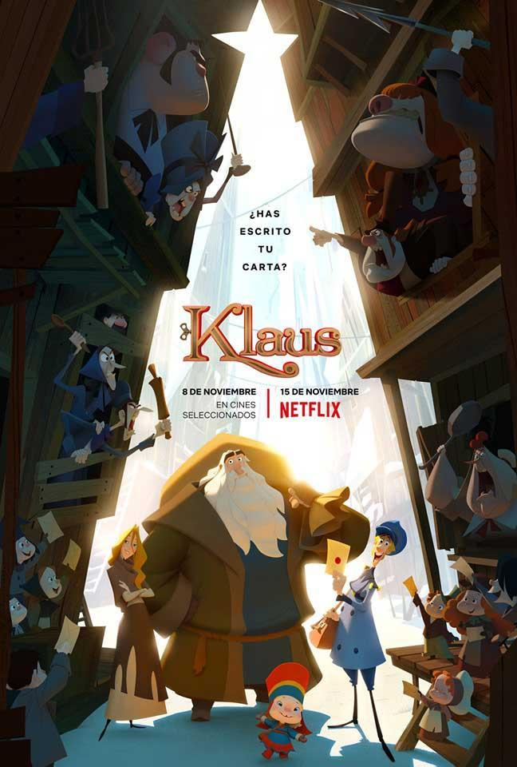
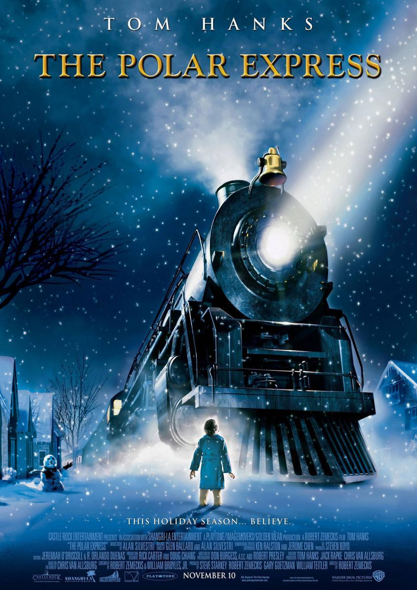
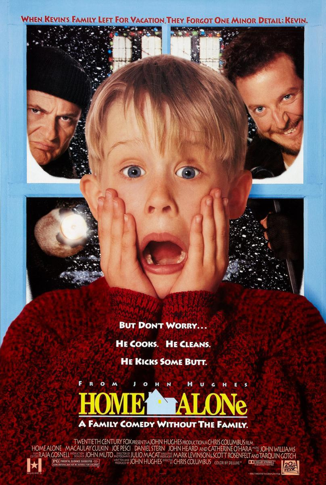
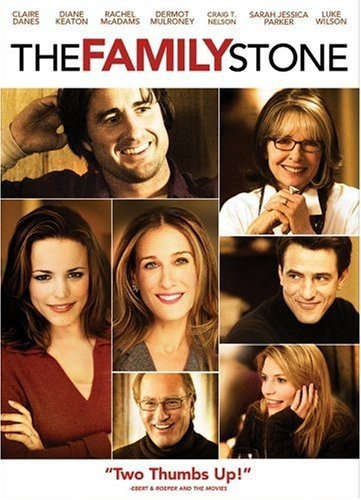

Top 10 películas de Navidad
¿No sabes qué ver estas vacaciones? Sigue esta guía de películas y disfruta
con tu familia o amigos de la
Navidad.
by: Romina Mariño
1

Las vidas de varias parejas se entrecruzan en Londres, poco antes de las fiestas de Navidad, con
resultados
románticos, divertidos y agridulces.
2

El Señor de Halloween, Jack Skellington, aburrido de hacer cada año lo mismo, descubre la Navidad en la
Ciudad
de la Navidad y queda fascinado, por lo que decide emplearse a fondo y mejorar dicha festividad.
3

Jesper es cartero en el Círculo Polar Ártico. Sus habitantes nunca envían cartas hasta que
encuentra a Klaus. Un fabricante de juguetes que vive aislado en una cabaña repleta de juguetes hechos a
mano.
4
Cuando cuatro generaciones del clan de los Cooper se juntan en Nochebuena, una serie de inesperados
visitantes y
sucesos extraños darán un vuelco a la noche.
5
El publicista Scott Calvin debe ocupar el puesto de un hombre barbudo y barrigón que se ha caído
accidentalmente
del tejado la víspera de Navidad.
6
Una mujer joven a la que le persigue la mala suerte acepta trabajar en Navidad en unos almacenes. Este
trabajo como elfo de Santa cambiará su suerte, allí Kate conocerá a Tom.
7

Es Navidad, y un niño intenta oír el tintineo de las campanillas del trineo de Santa Claus. A sólo cinco minutos para la medianoche, un ruido sobresalta al muchacho: un reluciente tren negro frena frente a su casa para llevarlo al Polo Norte.
8

El joven Kevin McCallister se porta mal la noche antes de ir de viaje a París, por lo que su madre le obliga a dormir en el ático. Al día siguiente y con todas las prisas, la familia va al aeropuerto y se olvida de Kevin.
9

Sybil es la matriarca de la anticonvencional familia Stone. Ni a ella ni a su familia les entusiasma la visita de Meredith Morton, la novia del hijo mayor, una mujer moderna que vive y trabaja en Nueva York.
10

Brad y Dusty se las han apañado para lograr lo que parecía imposible: compartir amistad y paternidad, o eso creían.